Computes and visualizes an item correlation matrix (also known
as a heatmap), offering several correlation "types" and optional clustering
(with possible cluster outlining). The function relies on
ggplot2 package, providing a high customisability using "the
grammar of graphics" (see the examples below).
plot_corr( Data, cor = "pearson", clust_method = "none", n_clust = 0, shape = "circle", labels = FALSE, labels_size = 3, line_size = 0.5, line_col = "black", line_alpha = 1, fill = NA, fill_alpha = NA, ... )
| Data |
|
|---|---|
| cor | character: correlation "type" used to correlation matrix
computation; available options are |
| clust_method | character: optional clustering method, available options
are: |
| n_clust | integer: the number of clusters you want to be outlined. When
set to zero, clustering is disabled, ignoring the |
| shape | character: tile appearance; either |
| labels | logical: when |
| labels_size | numeric: label size in points (pts). |
| line_size | numeric: cluster outline width. |
| line_col | character: color of the outline, either a HEX code (e.g.
"#123456"), or one of |
| line_alpha | numeric 0-1: the opacity of the outline. |
| fill | character: the color used to fill the outlined clusters. |
| fill_alpha | numeric 0-1: the opacity of the fill color. |
| ... | Arguments passed on to
|
An object of class ggplot and/or gg.
Correlation heatmap displays selected type of correlations between
items.The color of tiles indicates how much and in which way the items are
correlated - red color means positive correlation and blue color means
negative correlation. Correlation heatmap can be reordered using
hierarchical clustering method specified with clust_method argument.
When the desired number of clusters (argument n_clust) is not zero
and some clustering is demanded, the rectangles outlining the found
clusters are drawn.
Jan Netik
Institute of Computer Science of the Czech Academy of Sciences
netik@cs.cas.cz
Patricia Martinkova
Institute of Computer Science of the Czech Academy of Sciences
martinkova@cs.cas.cz
# use first 20 columns from HCI dataset (the remainder are not items) HCI <- HCI[, 1:20] # use Pearson product-moment correlation coefficient for matrix computation plot_corr(HCI, cor = "pearson")if (FALSE) { # use tetrachoric correlation and reorder the resulting heatmap # using Ward's method HCI %>% plot_corr(cor = "tetra", clust_method = "ward.D") # outline 3 Ward's clusters with bold yellow line and add labels HCI %>% plot_corr( n_clust = 3, clust_method = "ward.D", line_col = "yellow", line_size = 1.5, labels = TRUE ) # add title and position the legend below the plot library(ggplot2) HCI %>% plot_corr(n_clust = 3) + ggtitle("HCI heatmap") + theme(legend.position = "bottom") # mimic the look of corrplot package plot_corr(HCI, cor = "poly", clust_method = "complete", shape = "sq") + scale_fill_gradient2( limits = c(-.1, 1), breaks = seq(-.1, 1, length.out = 12), guide = guide_colorbar( barheight = .8, barwidth = .0275, default.unit = "npc", title = NULL, frame.colour = "black", ticks.colour = "black" ) ) + theme(axis.text = element_text(colour = "red", size = 12)) }